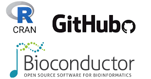
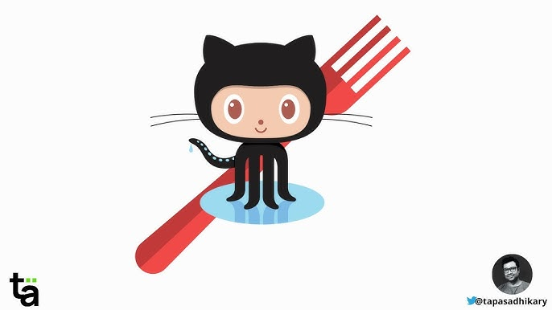

Lecture 04
Essential Tools for Environmental Data Science
Introduction
In the modern environmental data science landscape, a variety of tools help analyze spatial data, build reproducible workflows, and collaborate effectively. This document summarizes five key tools — R, RStudio, Git, GitHub, and Quarto — that are fundamental for careers in environmental science and that have been installed in this unit:
R
R is an open-source programming language widely used for statistical computing, data analysis, and visualization. It is particularly well-suited for environmental science because of its robust ecosystem of packages that support data manipulation, geospatial analysis, and ecological modeling. RStudio, a popular integrated development environment (IDE) for R, enhances usability with features like script management, version control integration, and interactive visualizations. Additionally, R’s strong community and open-source nature ensure continuous development and accessibility, making it an essential tool for scientists working with large and complex environmental datasets. / For early-career environmental scientists, learning R provides a critical foundation in data analysis and reproducible research. Environmental data is often messy, high-dimensional, and geospatial in nature, requiring tools that can handle complex transformations, statistical modeling, and visualization. R facilitates open science practices through integration with Git, GitHub, and Quarto, allowing researchers to share and document their work transparently. By mastering R, early-career scientists gain a competitive edge in research, policy analysis, and industry applications, positioning themselves for success in data-driven environmental fields.

Tip
R is built on a foundational programming languages C and C++, which provide the low-level computational efficiency needed for handling large datasets and complex calculations. While R itself is an interpreted language designed for statistical computing, many of its core functions and high-performance packages, such as data.table and Rcpp (R C Plus Plus), leverage C++ for speed and efficiency. The Rcpp package, in particular, allows users to write C++ code within R, enabling the creation of faster custom functions while maintaining R’s user-friendly syntax. This integration makes R both accessible for beginners and powerful enough for advanced users who need optimized performance for computationally intensive tasks, such as environmental simulations, hydrological modeling, and large-scale data analysis.
The integration of C++ within R is particularly valuable for geospatial data science. Geospatial analysis often involves handling massive raster and vector data, performing computationally intensive operations like spatial joins, topology corrections, and coordinate transformations. Many R packages used in geospatial science, such as sf (for vector data) and terra (for raster data) rely on C++ under the hood to optimize performance as GDAL (Geospatial Data Abstraction Library) - a foundational geospatial software library is primarily written in C++. Other key spatial libraries like PROJ (primarily written in C), and GEOS (Geometry Engine - Open Source; primarily written in C++) benefit from R’s direct connection to these lower level languages.
Packages

R packages are collections of functions, data, and documentation that extend the base capabilities of R. Packages, can be easily installed from repositories like CRAN (Comprehensive R Archive Network), Bioconductor, and GitHub, allowing users to perform specialized tasks such as geospatial analysis (sf, raster), machine learning (tidymodels, caret), and environmental data access (dataRetrival, climateR). The modular nature of R packages enables researchers to tailor their workflows to specific needs while promoting reproducibility and collaboration. Additionally, the active R community continuously develops and maintains packages, ensuring that the latest scientific methods and computational tools are available to environmental scientists and data analysts alike.
tidyverse
The tidyverse, a collection of R packages designed for data science, makes learning R more intuitive while still offering the flexibility needed for long-time programmers. Packages like dplyr, ggplot2, tidyr, and readr provide a consistent, human-readable syntax that simplifies data manipulation, visualization, and cleaning. The pipe operator (|>) and chaining functions (%>%) allow for streamlined workflows, reducing the need for nested functions while improving code readability. For beginners, this structured approach lowers the barrier to entry, making it easier to work with data without needing extensive programming experience. Meanwhile, experienced programmers benefit from the modularity and extensibility of the tidyverse, enabling them to integrate R with other languages like Python, SQL, or even shell scripts (e.g Bash). This balance between simplicity and power makes the tidyverse an ideal framework for both learning R and scaling up to more advanced environmental data science applications.

tidymodels

The tidymodels framework extends the tidyverse philosophy to machine learning, providing a consistent and user-friendly approach to model building and evaluation. With a syntax similar to tidyverse packages, tidymodels makes it easier for those familiar with R’s data wrangling tools to transition into predictive modeling. The framework includes packages like parsnip for model specification, recipes for data preprocessing, and yardstick for performance evaluation. For early-career environmental scientists, tidymodels offers an accessible way to learn machine learning basics, such as regression, classification, and resampling techniques, while maintaining best practices like reproducibility and workflow automation. Beyond learning, it provides powerful tools for running models that enhance environmental science, whether for predicting climate patterns, classifying land cover, or analyzing water quality trends, allowing scientists to make data-driven decisions with confidence.
RStudio
While R is the programming language (like Python, C, C++) that executes requested computations, RStudio is an Integrated Development Environment (IDE) designed to make working with R more efficient and user-friendly. RStudio provides a structured interface that enhances the coding experience by offering tools such as:
A script editor for writing and organizing code.
A console for running R commands interactively.
Panels for managing datasets, visualizations, and documentation.
Expand To Learn About Panes
RStudio is organized into four primary panels, each can contain a number of panes serving a distinct purpose:
Source: This is where you can write and edit scripts and Quarto files. It features syntax highlighting, code completion (check out if you can get a student GitHub Student Developer Pack for free!), and a built-in debugger to aid in efficient coding. Users can also manage project files directly from here.
Console: This pane is where users execute R commands interactively - nothing here saves though! It’s great for testing snippets of code, viewing output immediately, and checking error messages during development. The console can also run entire scripts line-by-line or all at once.
Environment: This pane displays the current R environment including all loaded datasets, variables, functions, and their values. It allows users to easily navigate and inspect objects in memory.
Help: Offers easy access to R’s built-in documentation, including function help files, package references, and vignettes, making it easier to learn and troubleshoot as you go.
Files: Serves as a file browser to navigate the File System and manage project directories. It allows you to easily open, save, or create new files within your project structure.
Plots: Displays static visualizations generated by R scripts, such as graphs and charts. Users can zoom in on plots, export them as images, or save them directly from this panel - although for that we suggest
ggplot2::ggsave.Viewer: The Viewer tab is particularly valuable for environmental scientists as it allows you to visualize rendered HTML outputs. These might include Quarto reports, Shiny apps, or interactive maps (e.g.
leafetormapview). It’s an essential tool for viewing the results of dynamic and interactive analyses within the RStudio environment without switching to a browser.History: Keeps a record of all executed commands in the current R session. This feature is useful for tracking previous work and re-running or modifying commands.
Packages: Lists all installed R packages and provides options for installing, updating, or removing packages. It helps users manage their environment’s dependencies.
Git: If version control is enabled, the Git pane provides an interface to track and commit changes, sync with remote repositories, and manage versions. Users can commit code changes, view the status of their repository, and easily navigate between different branches directly from within RStudio.
Terminal, Bash, and CLI
These three terms—Terminal, Shell, and Bash—are often used interchangeably, but they refer to different components of the command-line environment.
Terminal (Interface):
A terminal is a program that provides a text-based interface for interacting with the system. It does not process commands itself but acts as a bridge between the user and the shell.
Examples: GNOME Terminal, macOS Terminal, Windows Terminal, Alacritty.
Shell (Command Processor)
A shell is a command-line interpreter that processes user commands. It runs inside a terminal and executes commands to interact with the operating system.
Examples: sh (Bourne Shell), Bash (Bourne Again Shell), zsh (Z Shell), ksh (Korn Shell), fish (Friendly Interactive Shell).
Bash (A Type of Shell)
Bash (Bourne Again Shell) is one of the most widely used shells, an extension of the original Bourne Shell (sh) with additional scripting capabilities. Default on most Linux distributions and older versions of macOS (before switching to zsh). Supports features like scripting, history, tab completion, and automation.
How They Work Together
- You open a terminal (like GNOME Terminal or macOS Terminal).
- The terminal launches a shell (such as Bash or zsh).
- You type a command, and the shell interprets and executes it.
Analogy: Terminal = TV screen & remote (interface to interact). Shell = Cable box (interprets inputs and sends output). Bash = Specific cable provider (one of many options for command processing).
For most users, Bash inside a terminal is the default way to interact with Linux and macOS systems, making it essential for scripting, automation, and working with geospatial and environmental data tools like GDAL and PROJ.
Key Applications for Environmental Scientists
Geospatial Data Processing: Tools like GDAL, PROJ, and OGR allow for the manipulation of large geospatial datasets, such as raster and vector data.
Example: Converting coordinate systems or clipping satellite imagery using gdalwarp or ogr2ogr.
Climate and Hydrologic Modeling: Many environmental models (e.g., WRF, SWAT, DHSVM, PRMS) are run via the command line, often on remote servers or high-performance computing (HPC) clusters.
Example: Running a WRF simulation with wrf.exe or automating a SWAT model run.
Version Control and Collaboration: Git commands (git add, git commit, git push) allow researchers to track changes and collaborate efficiently.
High-Performance Computing (HPC): Many environmental models and analyses require substantial computational power. Understanding CLI commands is essential for running jobs on remote servers via SSH and Slurm.
Example: Submitting a model run to an HPC cluster using sbatch myscript.sh.
Automating Repetitive Tasks: Bash scripting can automate data preprocessing, file management, and analysis pipelines.
Example: Running an analysis or report every day
Git

Git is a version control system that allows users to track changes in code, collaborate efficiently, and maintain a reproducible research workflow. For environmental scientists, who often work with large datasets, complex models, and interdisciplinary teams, Git ensures that analyses, scripts, and documentation remain organized and versioned. By using Git, researchers can experiment with different approaches without losing previous work, revert to earlier versions of code if needed, and seamlessly collaborate with colleagues through platforms like GitHub, GitLab, or Bitbucket.
Beyond simple version tracking, Git enhances the reproducibility of scientific research. When combined with tools like R, Python, and geospatial software, it enables scientists to share well-documented workflows, ensuring that results can be verified and built upon by others. Whether managing climate models, hydrologic simulations, or geospatial analyses, aspiring environmental scientists benefit from Git’s structured approach to handling code, improving transparency, and fostering collaboration in data-driven research.
Github
GitHub is an online platform for hosting and sharing code, built on top of Git, the version control system. While Git manages local repositories and tracks changes in files, GitHub provides a cloud-based interface for storing, collaborating, and publishing projects. This distinction is crucial—Git operates on a user’s local machine, while GitHub enables remote access, team collaboration, and project management features such as issue tracking, pull requests, and discussions.
For environmental scientists, GitHub facilitates open science by making research workflows, datasets, and modeling scripts accessible to a global audience. It allows teams to work asynchronously, review code changes, and integrate automated workflows for data processing and analysis. Scientists can also use GitHub to document research with README files and wikis, ensuring that models, climate data, and geospatial analyses are transparent and reproducible. Whether managing a personal project or contributing to open-source hydrologic and climate modeling tools, GitHub is an essential resource for collaboration and knowledge sharing in environmental research.

Quarto

Quarto is an open-source publishing system that allows researchers to create dynamic, reproducible documents, presentations, and reports. While similar to R Markdown, Quarto extends its capabilities beyond R, supporting Python, Julia, and ObservableJS, making it a versatile tool for multi-language scientific workflows. It enables scientists to seamlessly integrate code, text, figures, and citations in a single document while ensuring that outputs—such as PDFs, HTML reports, or interactive dashboards—remain reproducible and easy to share.
For environmental scientists, Quarto enhances research communication by allowing the creation of well-documented reports that automatically update when data or analyses change. Whether generating climate model summaries, hydrologic simulation reports, or geospatial data visualizations, Quarto ensures that findings are transparent, structured, and ready for publication. With built-in support for GitHub integration and web publishing, Quarto also makes it easy to share research openly, fostering collaboration and reproducibility in environmental science.

Next Time
Daily Assignment: Forking & Quarto
Next Topic: Data Structures
